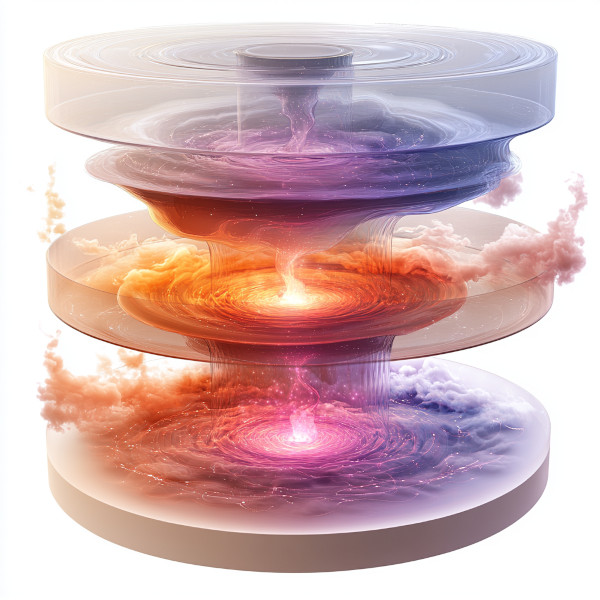

Quantum Oscillator Engine

Figure 1: A 3D representation of how the Quantum Oscillator Engine Works
Overview
The Quantum Oscillator Engine is an advanced power generation system that leverages the principles of quantum mechanics and the speculative process of entropy cycling observed in black holes and white holes. This engine is capable of providing a nearly inexhaustible source of energy, making it ideal for powering large spacecraft, massive systems such as time dilation fields, wormhole generators, and even planet-wide power grids.
Rovelli’s Speculation
Carlo Rovelli, a prominent physicist known for his work in quantum gravity, has speculated that black holes do not end in singularities but instead undergo a quantum bounce, transitioning into white holes. In this process, the black hole, having absorbed high-entropy matter, reverses its collapse and expels matter in a more ordered state through the white hole phase. This cycle of entropy reversal and redistribution plays a crucial role in the cosmic lifecycle of matter and energy.
Our Adaptation
Building upon Rovelli’s ideas, we propose a speculative adaptation where the black hole’s quantum bounce does not merely expel ordered matter, but rather, it facilitates a continual cycling of entropy at the quantum level. In this model, instead of reversing time, the black hole reverses entropy, converting high-entropy matter into low-entropy energy, and then releasing it through a violent bounce as a white hole. This concept has been miniaturized and harnessed within the Quantum Oscillator Engine, allowing for a stable, self-renewing energy source.
Quantum Oscillator Engine
Overview
The Quantum Oscillator Engine is an advanced power generation system that leverages the principles of quantum mechanics and the speculative process of entropy cycling observed in black holes and white holes. This engine is capable of providing a nearly inexhaustible source of energy, making it ideal for powering large spacecraft, massive systems such as time dilation fields, wormhole generators, and even planet-wide power grids.
Rovelli’s Speculation
Carlo Rovelli, a prominent physicist known for his work in quantum gravity, has speculated that black holes do not end in singularities but instead undergo a quantum bounce, transitioning into white holes. In this process, the black hole, having absorbed high-entropy matter, reverses its collapse and expels matter in a more ordered state through the white hole phase. This cycle of entropy reversal and redistribution plays a crucial role in the cosmic lifecycle of matter and energy.
Our Adaptation
Building upon Rovelli’s ideas, we propose a speculative adaptation where the black hole’s quantum bounce does not merely expel ordered matter, but rather, it facilitates a continual cycling of entropy at the quantum level. In this model, instead of reversing time, the black hole reverses entropy, converting high-entropy matter into low-entropy energy, and then releasing it through a violent bounce as a white hole. This concept has been miniaturized and harnessed within the Quantum Oscillator Engine, allowing for a stable, self-renewing energy source.
The Quantum Oscillator Engine
The Quantum Oscillator Engine operates by replicating the black hole-to-white hole cycle on a quantum scale. This results in a continuous flow of low-entropy energy that can be used to power some of the most demanding systems in the universe. The engine is composed of three primary fields:
Two Oscillating Fields
There are two oscillating fields within the engine, each of which alternates between “black-hole mode” and “white-hole mode.” When one field is in black-hole mode, it compresses matter to a quantum state, reducing its entropy and storing vast amounts of potential energy. Simultaneously, the other field is in white-hole mode, releasing this stored energy in controlled bursts, mimicking the “bounce” of a white hole. These fields constantly switch modes, ensuring a continuous flow of energy.
Regulating Field
The third field, the regulating field, is critical for maintaining system stability. It ensures that the oscillations between the black-hole and white-hole modes are synchronized and balanced, preventing any imbalances or disruptions that could destabilize the engine. This field manages the precise timing and energy flow between the two oscillating fields, ensuring a consistent and reliable energy output.
Applications
- Large Spacecraft: Provides the immense power required for deep space exploration and interstellar travel.
- Time Dilation Systems: Powers the field generators that control time dilation zones across entire star systems.
- Wormhole Generators: Sustains the energy demands of creating and maintaining stable wormholes for interstellar trade and travel.
- Planet-Wide Power Sources: Supplies renewable energy on a planetary scale, supporting advanced civilizations and their infrastructure.
Advantages
- Inexhaustible Energy: The continuous cycling of entropy within the engine ensures a nearly limitless supply of energy.
- High Efficiency: The process of converting high-entropy matter into low-entropy energy results in minimal waste.
- Versatility: Can be scaled for use in various applications, from powering small colonies to entire planets.
Challenges
- Complexity: The technology is highly sophisticated, requiring precise control over quantum states and entropy management.
- Stability: While generally stable, the engine must be carefully monitored to prevent fluctuations that could lead to uncontrolled energy releases.
The Quantum Oscillator Engine represents the pinnacle of energy generation technology, merging advanced quantum mechanics with speculative cosmological theories to create a power source that could sustain the most ambitious endeavors of any advanced civilization.